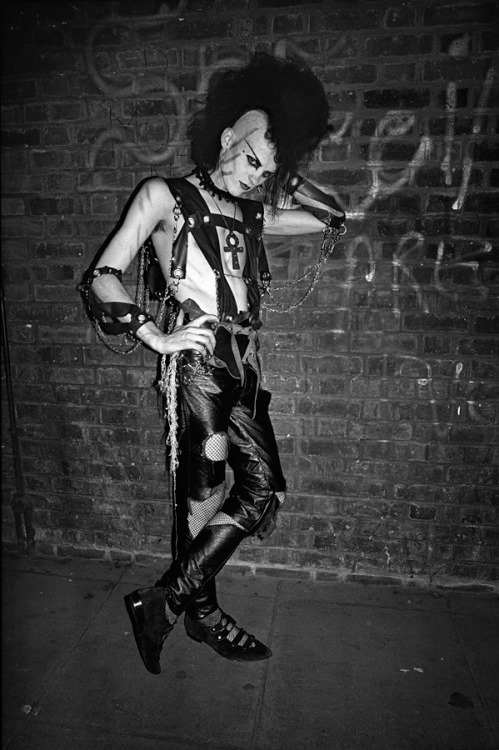

The Fashion of the Goth Subculture:
Last but not least, we will delve into goth fashion and its influence. Goth fashion is very diverse and atypical, there is no one specific way to dress goth.
Since a fundamental part of the goth subculture is anti-consumerism, DIY is a giant part of goth fashion.
Goths were also inspired by Victorian era mourning attire,
vampires,
creatures from film and literature, as well as the early 1900s silent film actress,
Theda Bara.
Many types of goth fashion styles exist now, such as: Trad goth, Cybergoth, victorian goth, gothic lolita, and pastel goth.
Overall, the goth subculture isn’t just about the dark, broody fashion. There is not one way to look goth, as it's a subculture based in music and politics, not fashion. The goth subculture is very multifaceted and complicated, it’s not just represented by an angsty teen or a vampire from a film, it’s an entire culture and way of self-expression.